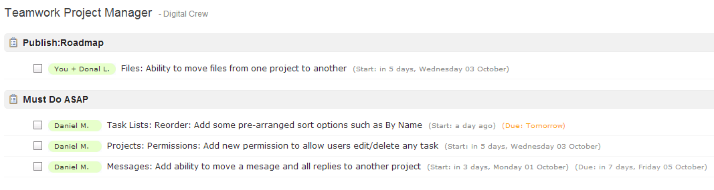
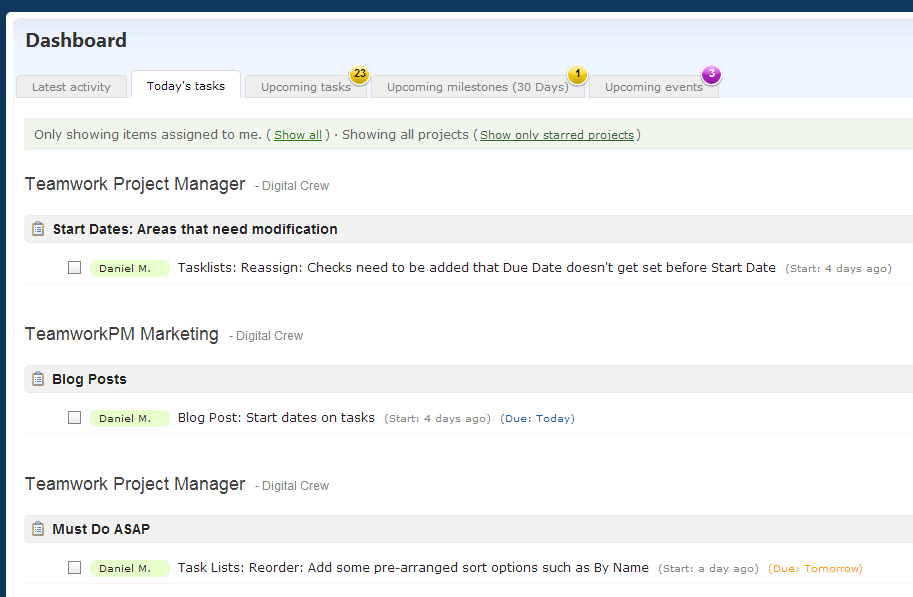

Top of our Roadmap was a feature that we’ve had many many requests for – Start Dates on tasks.
{kind=link}
For an absolute age we’ve held off tackling this feature but in the last few months we’ve been inundated with requests. It was one of the main reasons people cancelled their trial accounts. I made it my mission to get this added in time for this months Newsletter.
To give a bit of background on why we didn’t add Start Dates from day one and why we took so long to add them let me step down memory lane for a bit…
5 years ago our consulting business was on the up. We had more work than we could handle and new projects landing on our doors every day. We hadn’t anything in place to help manage and co-ordinate these projects and customers were getting annoyed.
Tasks were being forgotten, emails were not getting answered, projects were taking longer to finish as we jumped between “the next most important thing” depending on how loud each customer was shouting.
We looked at various products and signed up for Basecamp. We used Basecamp for a while but we found it lacking in features that we needed. We thought we could do better so we started our own internal app to help manage the load. Like Basecamp we started with basic to-dos that could be assigned to a person. We didn’t have dates and you had to associate the task list to a Milestone to get a rough date. It worked for a while but it wasn’t ideal.
The next iteration of tasks brought Due Dates. At this time we had launched Teamwork as a product of it’s own. We split our time between consultancy work (4 days) and Teamwork (1 day and weekends) Friday was “fun” day. This was the day where we could improve Teamwork and add the features suggested by people who started to use Teamwork.
People loved the due dates. We got a tonne of people moving to Teamwork from Basecamp because we had due dates on tasks!
As Teamwork got more popular and more people started using it the feedback kept pouring in.
What about recurring tasks? What about multiple people on a single task? What about dependencies…nobody was asking for start dates!
What happened next? We added all the features I just listed and put Start Dates on the long finger…
Lets jump back to the present day and look at the next top requested feature. Gantt Charts. Absolutely impossible to do 100% without start dates. With start dates added Gantt Charts are finally a possibility!

{kind=link}
The hardest part of adding Start Dates on tasks was the cascading effect it had on existing areas of the app. Take for example the Dashboard/Project Overview. We have 3 handy tabs on these relating to Late, Today and Upcoming tasks.
The Today and Upcoming tabs needed to change to take start dates in to account. Because a start date is optional and a due date it optional we need to allow for the following:
- Tasks with a due date only
- Tasks with a start date only
- Tasks with both a due date and a start date
The Today tab will now list any task that has a due date of “Today” or any task that was due to start on or before today.
The Upcoming tab will now list any task that is due with-in 14 days (if it doesn’t have a start date) or due to start with-in 14 days.
If you don’t add Start Dates to your tasks these tabs will function as they always have.
My personal favourite benefit of start dates is that I no longer have to re-schedule my late tasks every morning. The way I work is I queue up a load of tasks for myself every morning and I set the Due Date to Today so I can work off my Today tab on the Dashboard. The problem is I’m always over optimistic and the next day I may have a few late tasks from the day before.

{kind=link}
It’s a pain having to go in the next day and set the due date to Today. Now with Start Dates on tasks, I just set the new start date field on the tasks I hope to get done and leave the Due Date blank. They all show on my Today tab and if I don’t get them done, they’ll still be on my Today tab when I get in to work the next day!
There are other areas where Start Dates greatly enhance Teamwork. We added the export to MS Project and GanttProject a while back so people could visualize their tasks on a printable Gantt Chart. The problem was that the Gantt was generated using a Due Date only so it didn’t represent a true Gantt chart.
We’ve updated both these exports to include the Start Date so the Gantt chart export is now much more useful.
We also got to update the iCal feeds for the Calendar. Tasks with a Start and Due date set will now show as spanned events in your favourite external calendar such as iCalendar or Google Calendar.
We’re excited about the new features we can add to Teamwork over the next few months so stay tuned!